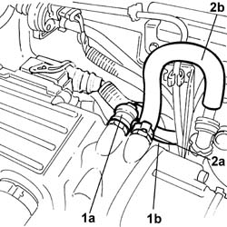
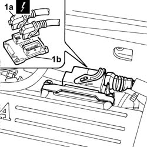
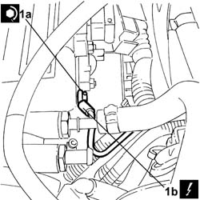
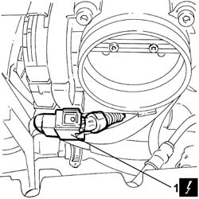
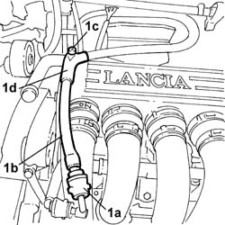
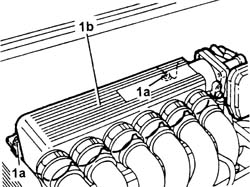

1072B50 Air CHAMBER - R.R.
- Path
- Procedures > 10 ENGINE > 1072 inlet and exhaust manifolds > 1072B inlet manifolds > 1072B50 Air CHAMBER - R.R.
- Kind
- repair procedure (removal / refitting; the operation number is the code)
- Applies to
- engines: 2.0 TB, 2.4 20V, 3.0 V6, 3.2 V6; all production periods
- Interactive page
- https://sloeber94.github.io/elrnDB-lThss/en/#/75086
Applies to: engines: 3.0 V6, 3.2 V6; all production periods
 Removing
Removing
 Refitting
Refitting- Open the boot, remove the cover on the left hand side and disconnect the negative battery lead.
See in Op. 7040D50 ENGINE COMPARTMENT UPPER SOUND INSULATION SHIELD - R.R.
See in Op. 1048A21 AIR INLET HOSE FROM INTAKE TO FILTER - R.R.
See in Op. 1048A28 vacuum air circuit resonator pipe - r+r
1. Disconnect the rapid connector (1a) for the fuel vapour recovery pipe (1b).
2. Open the band (2a) for the brake servo vacuum intake pipe (2b) and disconnect the pipe.

Applies to: engines: 3.0 V6, 3.2 V6; all production periods
1. Disconnect the connectors (1a) from the engine management control unit (1b).
 | Description | Connector |
|---|---|---|
1a | Engine management control unit | M010A |
| Description | Connector |
|---|---|---|
1a | Engine management control unit | M010B |

Applies to: engines: 3.0 V6, 3.2 V6; all production periods
1. Undo the nut (1a) and disconnect the earth lead (1b) on the air chamber.

Applies to: engines: 3.0 V6, 3.2 V6; all production periods
1. Disconnect the throttle casing connector
| Description | Connector |
|---|---|---|
1 | Integrated throttle casing actuator | N075 |

Applies to: engines: 3.0 V6, 3.2 V6; all production periods
1. Disconnect the rapid connector (1a) for the fuel pipe (1b) from the tank, undo the bolt (1c) fixing the pipe retaining duct (1d), then open the duct and release the pipe.

Applies to: engines: 3.0 V6, 3.2 V6; all production periods
See in Op. 1072B42 INTAKE MANIFOLDS (all) - R.R. and Replace gasket
1. Undo the bolts (1a) and remove the air chamber (1b) and the gasket underneath.

Applies to: engines: 3.0 V6, 3.2 V6; all production periods
Refitting
Removing- Fit the air chamber and the gasket underneath and tighten the fixing bolts to the recommended torque.
 | Value - daNm | Fastening | Component | Ø |
|---|---|---|---|---|
. | 0,9 | Bolt | INLET AIR DUCT | M6 |
See in Op. 1072B42 INTAKE MANIFOLDS (all) - R.R. and Replace gasket
- Position the fuel pipe in the duct and tighten the fixing bolt, then connect the rapid connector.
- Connect the throttle casing connector
| Description | Connector |
|---|---|---|
. | Integrated throttle casing actuator | N075 |
- Position the earth lead on the air chamber and tighten the fixing nut.
- Connect the connectors to the engine management control unit.
| Description | Connector |
|---|---|---|
. | Engine management control unit | M010A |
| Description | Connector |
|---|---|---|
. | Engine management control unit | M010B |
- Connect the vacuum intake pipe and close the retaining band.
- Connect the rapid connector for the fuel vapour recovery pipe.
See in Op. 1048A28 vacuum air circuit resonator pipe - r+r
See in Op. 1048A21 AIR INLET HOSE FROM INTAKE TO FILTER - R.R.
See in Op. 7040D50 ENGINE COMPARTMENT UPPER SOUND INSULATION SHIELD - R.R.
- Connect the negative battery terminal and position the cover on the left hand side of the luggage compartment.
Applies to: engines: 2.0 TB, 2.4 20V; all production periods
- Operation not available
Topics linked from this page (4)
- 1048A21 AIR INLET HOSE FROM INTAKE TO FILTER - R.R.
- 1048A28 vacuum air circuit resonator pipe - r+r
- 1072B42 INTAKE MANIFOLDS (all) - R.R. and Replace gasket
- 7040D50 ENGINE COMPARTMENT UPPER SOUND INSULATION SHIELD - R.R.
Topics that link to this page (28)
- 1008A44 RIGID REAR power unit MOUNTING - R.R.
- 1016A34 Right TAPPET COVER - R.R. and Replace gasket
- 1016A36 Left and right TAPPET COVERS - R.R.
- 1016A46 Ignition COILS COVER on cylinder head - R.R.
- 1016D20 LEFT CYLINDER HEAD - R.R. and replace gasket
- 1016D24 RIGHT CYLINDER HEAD - REMOVING-REFITTING AND REPLACING GASKET
- 1020A20 CRANKCASE SUMP - R.R. clean contact surfaces and apply sealant
- 1020D08 FRONT crankshaft oil seal COVER - R.R. and replace seals with timing belt(s) removed for versions with automatic transmission
- 1020D12 Crankshaft oil seal FRONT COVER - R.R. and Replace seals
- 1032B10 TOOTHED timing BELT - R.R. for timing adjustment or replacement
- 1032B55 LEFT HEAD TOOTHED DRIVEN PULLIES - R.R. FOR VERSIONS WITH AIR CONDITIONING
- 1032C32 TIMING BELT FIXED TENSIONER - R.R.
- 1036E15 Right cylinder head CAMSHAFTS - R.R. on vehicle for versions with air conditioning
- 1036E54 OIL SEALS FOR LEFT CYLINDER HEAD CAMSHAFTS - REPLACE
- 1036E58 OIL SEALS FOR RIGHT CYLINDER HEAD CAMSHAFTS - REPLACE
- 1056B90 SYSTEM CABLE LOOM - R.R.
- 1080B39 RIGHT CATALYTIC PRECONVERTER - R.R. or Replace Gasket
- 1084C10 Engine oil heat exchanger - R.R.
- 1088D63 Alternator side flexible hose for alternator coolant return pipe - R.R.
- 1088D68 Connectors on coolant circuit alternator - R.R. or replace gasket
- 5510C14 Ignition COILS - R.R.
- 5510C18 Right cylinder head IGNITION COILS - R.R.
- 5510D10 SPARK PLUGS - R.R.
- 5520B10 STARTER MOTOR - R&R
- 5530A10 ALTERNATOR - R.R.
- 5530A40 Alternator BRACKETS/MOUNT/SPACER - R&R
- 5530B34 LEAD between junction unit terminal and starter motor - R.R.
- 5530B36 LEAD between starter motor and alternator - R.R.